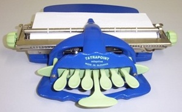

Pontírógép
A gép hét billentyűje közül hat a Braille-írás egy-egy pontjának kialakítására, egy pedig a szóköz előállítására szolgál. Egyszerre kell lenyomni az írni kívánt betű pontösszetételének megfelelő billentyűket.

A gép hét billentyűje közül hat a Braille-írás egy-egy pontjának kialakítására, egy pedig a szóköz előállítására szolgál. Egyszerre kell lenyomni az írni kívánt betű pontösszetételének megfelelő billentyűket.
